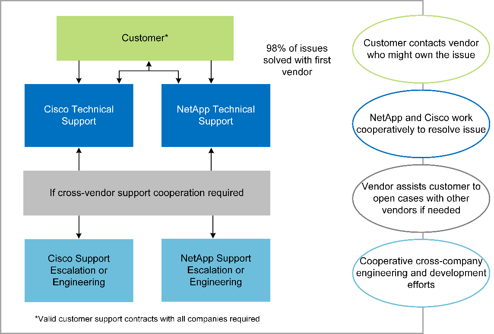

TR-4865: FlexPod for Medical Imaging
Contributors
 Download PDF of this page
Download PDF of this page
Jaya Kishore Esanakula and Atul Bhalodia, NetApp
Medical imaging accounts for 70% of all data that is generated by Healthcare organizations. As digital modalities continue to advance and new modalities emerge, the amount of data will continue to increase. For example, the transition from analog to digital pathology will dramatically increase image sizes at a rate that will challenge any data management strategies currently in place.
COVID-19 has clearly reshaped the digital transformation; according to a recent report, COVID-19 has accelerated digital commerce by 5 years. The technological innovation driven by problem solvers is fundamentally changing the way that we go about our daily life. This technology-driven change will overhaul many critical aspects of our life, including healthcare.
Healthcare is poised to undergo a major change in the coming years. COVID is accelerating innovation in healthcare that will propel the industry by at least several years. At the heart of this change is the need to make healthcare more flexible in handling pandemics by being more affordable, available, and accessible, without compromising reliability.
At the foundation of this healthcare change is a well-designed platform. One of the key metrics to measure the platform is the ease with which platform changes can be implemented. Speed is the new scale and data protection cannot be compromised. Some of the world’s most critical data is being created and consumed by the clinical systems that support clinicians. NetApp has made critical data available for patient care where the clinicians need it, on premise, in the cloud, or in a hybrid setting. Hybrid multi- cloud environments are the current state of the art for IT architecture.
Healthcare as we know it revolves around providers (doctors, nurses, radiologists, medical device technicians, and so on) and patients. As we bring patients and providers closer together, making the geographic location a mere data point, it becomes even more important for the underlying platform to be available when providers and patients need it. The platform must be both efficient and cost-effective in the long term. In their efforts to drive patient care costs even lower, Accountable Care Organizations (ACOs) would be empowered by an efficient platform.
When it comes to health information systems used by healthcare organizations, the question of build versus purchase tends to have a single answer: purchase. This could be for many subjective reasons. Purchasing decisions made over many years can create heterogeneous information systems. Each system has a specific set of requirements for the platform that they are deployed on. The most significant issue is the large, diverse set of storage protocols and performance levels that information systems require, which makes platform standardization and optimal operational efficiency a significant challenge. Healthcare organizations cannot focus on mission critical issues because their attention is spread thin by trivial operational needs like the large set of platforms that require a diversified set of skills and thus SME retention.
The challenges can be classified into the following categories:
-
Heterogeneous storage needs
-
Departmental silos
-
IT operational complexity
-
Cloud connectivity
-
Cybersecurity
-
Artificial intelligence and deep learning
With FlexPod, you get a single platform that supports FC, FCoE, iSCSI, NFS/pNFS, SMB/CIFS and so on from a single platform. People, processes, and technology are part of the DNA that FlexPod is designed and built upon. FlexPod adaptive QoS helps to break down the departmental silos by supporting multiple mission critical clinical systems on the same underlying FlexPod platform. FlexPod is FedRAMP certified and FIPS 140-2 certified. Additionally, healthcare organizations are faced with opportunities such as artificial intelligence and deep learning. FlexPod and NetApp solve these challenges and make the data available where it is needed on premises or in a hybrid multi- cloud setting in a standardized platform. For more information and a series customer success stories, see FlexPod Healthcare.
Typical medical imaging information and PACS systems have the following set of capabilities:
-
Reception and registration
-
Scheduling
-
Imaging
-
Transcription
-
Management
-
Data exchange
-
Image archive
-
Image viewing for image capturing and reading for technicians and image viewing for clinicians
Regarding imaging, the healthcare sector is trying to solve the following clinical challenges:
-
Wider adoption of natural language processing (NLP)-based assistants by technicians and physicians for image reading. Radiology department can benefit from voice recognition to transcribe reports. NLP can be used to identify and anonymize a patient’s record, specifically DICOM tags embedded in the DICOM image. NLP capabilities require high performing platforms with low latency response times for image processing. FlexPod QoS not only delivers and performance but also provides mature capacity projections for future growth.
-
Wider adoption of standardized clinical pathways and protocols by ACOs and community health organizations. Historically, clinical pathways have been used as a static set of guidelines rather than an integrated workflow that guides clinical decisions. With advancements in NLP and image processing, DICOM tags in images can be integrated into clinical pathways as facts to drive clinical decisions. Therefore, these processes require high performance, low latency, and high throughput from the underlying infrastructure platform and storage systems.
-
ML models that leverage convolutional neural networks enable automation of image- processing capabilities in real time and thus require infrastructure that is GPU-capable. FlexPod offers both CPU and GPU compute components built into the same system, and CPUs and GPUs can be scaled independently of each other.
-
If DICOM tags are used as facts in clinical best-practice advisories, then the system must perform more reads of DICOM artifacts with low latency and high throughput.
-
When evaluating images, real-time collaboration between radiologists across organizations requires high performance graphics processing in the end- user compute devices. NetApp provides industry- leading VDI solutions specifically designed and proven for high-end graphics use cases. More information can be found here.
-
Image and media management across ACO health organizations can uses a single platform, regardless of the system of record for the image, by using protocols such as Digital Imaging and Communications in Medicine ( DICOM) and web access to DICOM-persistent objects ( WADO)
-
Health information exchange ( HIE) includes images embedded in messages.
-
Mobile modalities, such as handheld, wireless scanning devices (for example, pocket handheld ultrasound scanners attached to a phone), require a robust network infrastructure with DoD-level security, reliability, and latency at the edge, the core, and in the cloud. A data fabric enabled by NetApp provide organizations with this capability at scale.
-
Newer modalities have exponential storage needs; for example, CT and MRI require a few hundred MBs for each modality, but digital pathology images (including whole slide imaging) can be a few GBs in size. FlexPod is designed with performance, reliability and scaling as foundational traits.
A well-architected medical imaging system platform is at the heart of innovation. The FlexPod architecture provides flexible compute and storage capabilities with industry-leading storage efficiency.
Overall solution benefits
By running an imaging application environment on a FlexPod architectural foundation, your healthcare organization can expect to see an improvement in staff productivity and a decrease in capital and operating expenses. FlexPod provides a rigorously tested, prevalidated, converged that is engineered and designed to deliver predictable low-latency system performance and high availability. This approach results in high comfort levels and, ultimately, optimal response times for users of the medical imaging system.
Different components of the imaging system might require the storage of data in SMB/CIFS, NFS, Ext4, or NTFS file systems. That requirement means that the infrastructure must provide data access over the NFS, SMB/CIFS, and SAN protocols. A single NetApp storage system can support the NFS, SMB/CIFS, and SAN protocols, thus eliminating the need for the legacy practice of protocol- specific storage systems.
The FlexPod infrastructure is a modular, converged, virtualized, scalable (scale-out and scale- up), and cost-effective platform. With the FlexPod platform, you can independently scale out compute, network, and storage to accelerate your application deployment. And the modular architecture enables nondisruptive operations even during system scale-out and upgrade activities.
FlexPod delivers several benefits that are specific to the medical imaging industry:
-
Low-latency system performance. Radiologist time is a high- value resource, and efficient use of a radiologist’s time is paramount. Waiting for images or videos to load can contribute to clinician burnout and can affect clinician’s efficiency and patient safety.
-
Modular architecture. FlexPod components are connected through a clustered server, a storage management fabric, and a cohesive management toolset. As imaging facilities grow year over year and the number of studies increase, there will be a need for the underlying infrastructure to scale accordingly. FlexPod can scale compute, storage, and network independently.
-
Quicker deployment of infrastructure. Whether it is in an existing data center or a remote location, the integrated and tested design of FlexPod Datacenter with Medical Imaging enables you to get the new infrastructure up and running in less time, with less effort.
-
Accelerated application deployment. A prevalidated architecture reduces implementation integration time and risk for any workload, and NetApp technology automates infrastructure deployment. Whether you use the solution for an initial rollout of medical imaging, a hardware refresh, or expansion, you can shift more resources to the business value of the project.
-
Simplified operations and lower costs. You can eliminate the expense and complexity of legacy proprietary platforms by replacing them with a more efficient and scalable shared resource that can meet the dynamic needs of your workload. This solution delivers higher infrastructure resource utilization for greater return on investment (ROI).
-
Scale-out architecture. You can scale SAN and NAS from terabytes to tens of petabytes without reconfiguring running applications.
-
Nondisruptive operations. You can perform storage maintenance, hardware lifecycle operations, and software upgrades without interrupting your business.
-
Secure multitenancy. This benefit supports the increased needs of virtualized server and storage shared infrastructure, enabling secure multitenancy of facility-specific information, particularly if you are hosting multiple instances of databases and software.
-
Pooled resource optimization. This benefit can help you reduce physical server and storage controller counts, load- balance workload demands, and boost utilization while improving performance.
-
Quality of service (QoS). FlexPod offers QoS on the entire stack. These industry-leading QoS storage policies enable differentiated service levels in a shared environment. These policies help optimize performance for workloads and help to isolate and control runaway applications.
-
Support for storage tier SLAs by using QoS. You don’t have to deploy different storage systems for the different storage tiers that a medical imaging environment typically requires. A single storage cluster with multiple NetApp FlexVol volumes with specific QoS policies for different tiers can serve that purpose. With this approach, storage infrastructure can be shared by dynamically accommodating the changing needs of a particular storage tier. NetApp AFF can support different SLAs for storage tiers by allowing QoS at the level of the FlexVol volume, thus eliminating the need for different storage systems for different storage tiers for the application.
-
Storage efficiency. Medical images are typically pre-compressed by the imaging application to jpeg2k lossless compression which is around 2.5:1. However, this is imaging application and vendor specific. In larger imaging application environments (greater than 1PB), 5-10% storage savings are possible, and you can reduce storage costs with NetApp storage efficiency features. Work with your imaging application vendors and your NetApp subject matter expert to unlock potential storage efficiencies for your medical imaging system.
-
Agility. With the industry-leading workflow automation, orchestration, and management tools that FlexPod systems offer, your IT team can be far more responsive to business requests. These business requests can range from medical imaging backup and provisioning of additional test and training environments to analytics database replications for population health- management initiatives.
-
Higher productivity. You can quickly deploy and scale this solution for optimal clinician end-user experiences.
-
Data fabric. Your data fabric powered by NetApp weaves data together across sites, beyond physical boundaries, and across applications. Your data fabric powered by NetApp is built for data-driven enterprises in a data-centric world. Data is created and used in multiple locations, and it often needs to be leveraged and shared with other locations, applications, and infrastructures. So, you want a consistent and integrated way to manage it. This solution provides a way to manage data that puts your IT team in control and that simplifies ever-increasing IT complexity.
-
FabricPool. NetApp ONTAP FabricPool helps reduce storage costs without compromising performance, efficiency, security, or protection. FabricPool is transparent to enterprise applications and capitalizes on cloud efficiencies by lowering storage TCO without the need to rearchitect the application infrastructure. FlexPod can benefit from the storage tiering capabilities of FabricPool to make more efficient use of ONTAP flash storage. For full information, see FlexPod with FabricPool.
-
FlexPod security. Security is at the very foundation of FlexPod. In the past few years, ransomware has become a significant and increasing threat. Ransomware is malware that is based on crypto virology, the use of cryptography to build malicious software. This malware can use both symmetric and asymmetric key encryption to lock a victim’s data and demand a ransom to provide the key to decrypt the data. To learn how FlexPod helps mitigate threats like ransomware, see The Solution to Ransomware. FlexPod infrastructure components are also Federal Information Processing Standard (FIPS) 140-2 compliant.
-
FlexPod Cooperative Support. NetApp and Cisco have established FlexPod Cooperative Support, a strong, scalable, and flexible support model to meet the unique support requirements of the FlexPod converged infrastructure. This model uses the combined experience, resources, and technical support expertise of NetApp and Cisco to provide a streamlined process for identifying and resolving your FlexPod support issue, regardless of where the problem resides. The FlexPod Cooperative Support model helps confirm that your FlexPod system operates efficiently and benefits from the most up-to-date technology, while providing an experienced team to help resolve integration issues.
FlexPod Cooperative Support is especially valuable if your healthcare organization runs business-critical applications. The illustration below shows an overview of the FlexPod Cooperative Support model.

Scope
This document provides a technical overview of a Cisco Unified Computing System (Cisco UCS) and NetApp ONTAP-based FlexPod infrastructure for hosting this medical imaging solution.
Audience
This document is intended for technical leaders in the healthcare industry and for Cisco and NetApp partner solutions engineers and professional services personnel. NetApp assumes that the reader has a good understanding of compute and storage sizing concepts as well as technical familiarity with the medical imaging system, Cisco UCS, and NetApp storage systems.
Medical imaging application
A typical medical imaging application offers a suite of applications that together make an enterprise-grade imaging solution for small, medium, and large healthcare organizations.
At the heart of the product suite are the following clinical capabilities:
-
Enterprise imaging repository
-
Supports traditional image sources such as radiology and cardiology. Also supports other care areas like ophthalmology, dermatology, colonoscopy, and other medical imaging objects like photos and videos.
-
Picture archiving and communication system (PACS), which is a computerized means of replacing the roles of conventional radiological film
-
Enterprise Imaging Vendor Neutral Archive (VNA):
-
Scalable consolidation of DICOM and non-DICOM documents
-
Centralized Medical Imaging system
-
Support for document synchronization and data integrity between multiple (PACSs) in the enterprise
-
Document lifecycle management by a rules-based expert system that leverages document metadata, such as:
-
Modality type
-
Age of study
-
Patient age (current and at the time of image capture)
-
Single point of integration within and outside (HIE) of the enterprise:
-
Context- aware document linking
-
Health Level Seven International (HL7), DICOM, and WADO
-
Storage- agnostic archiving capability
-
-
Integration with other health information systems that use HL7 and context-aware linking:
-
Enables EHRs to implement direct links to patient images from patient charts, imaging workflows, and so on.
-
Helps embed a patient’s longitudinal care image history into EHRs.
-
-
Radiology technologist workflows
-
Enterprise zero footprint viewers for image viewing from anywhere on any capable device
-
Analytical tools that leverage retrospective and real-time data:
-
Compliance reporting
-
Operational reports
-
Quality control and quality assurance reports
-
Size of the healthcare organization and platform sizing
Healthcare organizations can be broadly classified by using standards-based methods that help programs such as ACO. One such classification uses the concept of a clinical integrated network (CIN). A group of hospitals can be called a CIN if they collaborate and adhere to proven standard clinical protocols and pathways to improve the value of care and reduce patient costs. Hospitals within a CIN have controls and practices in place to onboard physicians who follow the core values of the CIN. Traditionally, an integrated delivery networks (IDN) has been limited to hospitals and physician groups. A CIN crosses traditional IDN boundaries, and a CIN can still be part of an ACO. Following the principles of a CIN, healthcare organizations can be classified into small, medium, and large.
Small healthcare organizations
A healthcare organization is small if it includes only a single hospital with ambulatory clinics and an inpatient department, but it is not part of a CIN. Physicians work as caregivers and coordinate patient care during a care continuum. These small organizations typically include physician-operated facilities. They might or might not offer emergency and trauma care as integrated care for the patient. Typically, a small-sized healthcare organization performs about 250,000 clinical imaging studies annually. Imaging centers are considered to be small healthcare organizations and they do provide imaging services. Some also provide radiology dictation services to other organizations.
Medium healthcare organizations
A healthcare organization considered to be of medium size if it includes multiple hospital systems with focused organizations, such as the following:
-
Adult care clinics and adult inpatient hospitals
-
Labor and delivery departments
-
Childcare clinics and child inpatient hospitals
-
A cancer treatment center
-
Adult emergency departments
-
Child emergency departments
-
A family medicine and primary care office
-
An adult trauma care center
-
A child trauma care center
In a medium-sized healthcare organization, physicians follow the principles of a CIN and operate as a single unit. Hospitals have separate hospital, physician, and pharmacy billing functions. Hospitals might be associated with academic research institutes and perform interventional clinical research and trials. A medium healthcare organization performs as many as 500,000 clinical imaging studies annually.
Large healthcare organizations
A healthcare organization is considered to be large if it includes the traits of a medium- sized healthcare organization and offers the medium-sized clinical capabilities to the community in multiple geographical locations.
A large healthcare organization typically performs the following functions:
-
Has a central office to manage the overall functions
-
Participates in joint ventures with other hospitals
-
Negotiates rates with payer organizations annually
-
Negotiates payer rates by state and region
-
Participates in Meaningful Use (MU) programs
-
Performs advanced clinical research across population health cohorts by using standards-based population health management (PHM) tools
-
Performs up to one million clinical imaging studies annually
Some large healthcare organizations that participate in a CIN also have AI- based imaging reading capabilities. These organizations typically perform one to two million clinical imaging studies annually.
Before you look into how these different-sized organizations translate into an optimally sized FlexPod system, you should understand the various FlexPod components and the different capabilities of a FlexPod system.
FlexPod
Cisco Unified Computing System
Cisco UCS consists of a single management domain that is interconnected with a unified I/O infrastructure. Cisco UCS for medical imaging environments has been aligned with NetApp medical imaging system infrastructure recommendations and best practices so that the infrastructure can deliver critical patient information with maximum availability.
The compute foundation of enterprise medical imaging is Cisco UCS technology, with its integrated systems management, Intel Xeon processors, and server virtualization. These integrated technologies solve data center challenges and enable you to meet your goals for data center design with a typical medical imaging system. Cisco UCS unifies LAN, SAN, and systems management into one simplified link for rack servers, blade servers, and virtual machines (VMs). Cisco UCS consists of a redundant pair of Cisco UCS fabric interconnects that provide a single point of management and a single point of control for all I/O traffic.
Cisco UCS uses service profiles so that virtual servers in the Cisco UCS infrastructure are configured correctly and consistently. Service profiles include critical server information about the server identity, such as LAN and SAN addressing, I/O configurations, firmware versions, boot order, network virtual LAN (VLAN), physical port, and QoS policies. Service profiles can be dynamically created and associated with any physical server in the system in minutes rather than in hours or days. The association of service profiles with physical servers is performed as a single, simple operation that enables migration of identities between servers in the environment without requiring any physical configuration changes. It also facilitates rapid bare-metal provisioning of replacements for failed servers.
The use of service profiles helps confirm that servers are configured consistently throughout the enterprise. When using multiple Cisco UCS management domains, Cisco UCS Central can use global service profiles to synchronize configuration and policy information across domains. If maintenance must be performed in one domain, the virtual infrastructure can be migrated to another domain. With this approach, even when a single domain is offline, applications continue to run with high availability.
Cisco UCS is a next-generation solution for blade and rack server computing. The system integrates a low-latency, lossless, 40GbE unified network fabric with enterprise-class, x86-architecture servers. The system is an integrated, scalable, multi-chassis platform in which all resources participate in a unified management domain. Cisco UCS accelerates the delivery of new services simply, reliably, and securely through end-to-end provisioning and migration support for both virtualized and nonvirtualized systems. Cisco UCS provides the following features:
-
Comprehensive management
-
Radical simplification
-
High performance
Cisco UCS consists of the following components:
-
Compute. The system is based on an entirely new class of computing system that incorporates rack-mounted and blade servers based on the Intel Xeon scalable processor product family.
-
Network. The system is integrated into a low-latency, lossless, 40Gbps unified network fabric. This network foundation consolidates LANs, SANs, and high-performance computing networks, which are separate networks today. The unified fabric lowers costs by reducing the number of network adapters, switches, and cables and also by decreasing power and cooling requirements.
-
Virtualization. The system unleashes the full potential of virtualization by enhancing the scalability, performance, and operational control of virtual environments. Cisco security, policy enforcement, and diagnostic features are now extended into virtualized environments to better support changing business and IT requirements.
-
Storage access. The system provides consolidated access to both SAN storage and NAS over the unified fabric. It is also an ideal system for software-defined storage. By combining the benefits of a single framework to manage both the compute and the storage servers in a single pane, QoS can be implemented if needed to inject I/O throttling in the system. And your server administrators can preassign storage-access policies to storage resources, which simplifies storage connectivity and management and can help increase productivity. In addition to external storage, both rack and blade servers have internal storage that can be accessed through built-in hardware RAID controllers. By setting up the storage profile and disk configuration policy in Cisco UCS Manager, the storage needs of the host OS and application data are fulfilled by user-defined RAID groups. The result is high availability and better performance.
-
Management. The system uniquely integrates all system components so that the entire solution can be managed as a single entity by Cisco UCS Manager. To manage all system configuration and operations, Cisco UCS Manager has an intuitive GUI, a CLI, and a powerful scripting library module for Microsoft Windows PowerShell that are built on a robust API.
Cisco Unified Computing System fuses access layer networking and servers. This high-performance, next-generation server system gives your data center a high degree of workload agility and scalability.
Cisco UCS Manager
Cisco UCS Manager provides unified, embedded management for all software and hardware components in Cisco UCS. By using single- connection technology, UCS Manager manages, controls, and administers multiple chassis for thousands of VMs. Through an intuitive GUI, a CLI, or an XML API, your administrators use the software to manage the entire Cisco UCS as a single logical entity. Cisco UCS Manager resides on a pair of Cisco UCS 6300 Series Fabric Interconnects that use clustered, active-standby configuration for high availability.
Cisco UCS Manager offers a unified embedded management interface that integrates your servers, network, and storage. Cisco UCS Manager performs auto discovery to detect the inventory of, to manage, and to provision system components that you add or change. It offers a comprehensive set of XML APIs for third-party integration, and it exposes 9,000 points of integration. It also facilitates custom development for automation, for orchestration, and to achieve new levels of system visibility and control.
Service profiles benefit both virtualized and nonvirtualized environments. They increase the mobility of nonvirtualized servers, such as when you move workloads from server to server or when you take a server offline for service or upgrade. You can also use profiles in conjunction with virtualization clusters to bring new resources online easily, complementing existing VM mobility.
For more information about Cisco UCS Manager, see the Cisco UCS Manager product page.
Cisco UCS differentiators
Cisco Unified Computing System is revolutionizing the way that servers are managed in the data center. See the following unique differentiators of Cisco UCS and Cisco UCS Manager:
-
Embedded management. In Cisco UCS, the servers are managed by the embedded firmware in the fabric interconnects, eliminating the need for any external physical or virtual devices to manage them.
-
Unified fabric. In Cisco UCS, from blade server chassis or rack servers to fabric interconnects, a single Ethernet cable is used for LAN, SAN, and management traffic. This converged I/O reduces the number of cables, SFPs, and adapters that you need, in turn reducing your capital and operational expenses for the overall solution.
-
Autodiscovery. By simply inserting the blade server in the chassis or by connecting rack servers to the fabric interconnects, discovery and inventory of compute resource occurs automatically without any management intervention. The combination of unified fabric and auto discovery enables the wire-once architecture of Cisco UCS, where its compute capability can be extended easily while keeping the existing external connectivity to LAN, SAN, and management networks.
-
Policy-based resource classification. When a compute resource is discovered by Cisco UCS Manager, it can be automatically classified to a given resource pool based on the policies that you defined. This capability is useful in multitenant cloud computing.
-
Combined rack and blade server management. Cisco UCS Manager can manage B-Series blade servers and C-Series rack servers under the same Cisco UCS domain. This feature, along with stateless computing, makes compute resources truly hardware form factor–agnostic.
-
Model-based management architecture. The Cisco UCS Manager architecture and management database are model-based and data-driven. The open XML API that is provided to operate on the management model enables easy and scalable integration of Cisco UCS Manager with other management systems.
-
Policies, pools, and templates. The management approach in Cisco UCS Manager is based on defining policies, pools, and templates instead of a cluttered configuration. It enables a simple, loosely coupled, data-driven approach in managing compute, network, and storage resources.
-
Loose referential integrity. In Cisco UCS Manager, a service profile, a port profile, or policies can refer to other policies or to other logical resources with loose referential integrity. A referred policy cannot exist at the time of authoring the referring policy, but a referred policy can be deleted even though other policies are referring to it. This feature enables different subject-matter experts to work independently from each other. You gain great flexibility by enabling different experts from different domains—such as network, storage, security, server, and virtualization—to work together to accomplish a complex task.
-
Policy resolution. In Cisco UCS Manager, you can create a tree structure of organizational unit hierarchy that mimics the real-life tenants and organizational relationships. You can define various policies, pools, and templates at different levels of your organizational hierarchy. A policy that refers to another policy by name is resolved in the organizational hierarchy with the closest policy match. If no policy with a specific name is found in the hierarchy of the root organization, then a special policy named “default” is searched. This policy resolution practice enables automation-friendly management APIs and provides great flexibility to the owners of the different organizations.
-
Service profiles and stateless computing. A service profile is a logical representation of a server, carrying its various identities and policies. You can assign this logical server to any physical compute resource, as long as it meets the resource requirements. Stateless computing enables procurement of a server within minutes, which used to take days in legacy server management systems.
-
Built-in multitenancy support. The combination of policies, pools, templates, a loose referential integrity, policy resolution in organizational hierarchy, and a service profiles- based approach to compute resources makes Cisco UCS Manager inherently friendly to multitenant environments that are typically observed in private and public clouds.
-
Extended memory. The enterprise-class Cisco UCS B200 M5 Blade Server extends the capabilities of the Cisco Unified Computing System portfolio in a half-width blade form factor. The Cisco UCS B200 M5 harnesses the power of the latest Intel Xeon scalable- processor CPUs with up to 3TB of RAM. This feature enables the huge VM-to-physical- server ratio that many deployments need or enables certain architectures to support large memory operations, such as big data.
-
Virtualization- aware network. Cisco Virtual Machine Fabric Extender (VM-FEX) technology makes the access network layer aware of host virtualization. This awareness prevents pollution of compute and network domains with virtualization when a virtual network is managed by port profiles that are defined by your network administrator team. VM-FEX also offloads hypervisor CPU by performing switching in the hardware, thus enabling the hypervisor CPU to perform more virtualization- related tasks. To simplify cloud management, VM-FEX technology is well integrated with VMware vCenter, Linux Kernel-Based Virtual Machine (KVM), and Microsoft Hyper-V SR-IOV.
-
Simplified QoS. Even though FC and Ethernet are converged in the Cisco UCS, built-in support for QoS and lossless Ethernet make it seamless. By representing all system classes in one GUI panel, network QoS is simplified in Cisco UCS Manager.
Cisco Nexus IP and MDS switches
Cisco Nexus switches and Cisco MDS multilayer directors give you enterprise-class connectivity and SAN consolidation. Cisco multiprotocol storage networking helps reduce your business risk by providing flexibility and options: FC, Fiber Connection (FICON), FC over Ethernet (FCoE), iSCSI, and FC over IP (FCIP).
Cisco Nexus switches offer one of the most comprehensive data center network feature sets in a single platform. They deliver high performance and density for both the data center and the campus core. They also offer a full feature set for data center aggregation, end-of-row, and data center interconnect deployments in a highly resilient modular platform.
Cisco UCS integrates compute resources with Cisco Nexus switches and a unified fabric that identifies and handles different types of network traffic. This traffic includes storage I/O, streamed desktop traffic, management, and access to clinical and business applications. You get the following capabilities:
-
Infrastructure scalability. Virtualization, efficient power and cooling, cloud scale with automation, high density, and performance all support efficient data center growth.
-
Operational continuity. The design integrates hardware, Cisco NX-OS software features, and management to support zero-downtime environments.
-
Transport flexibility. You can incrementally adopt new networking technologies with this cost-effective solution.
Together, Cisco UCS with Cisco Nexus switches and MDS multilayer directors provide a compute, networking, and SAN connectivity solution for an enterprise medical Imaging system.
NetApp all-flash storage
NetApp storage that runs ONTAP software reduces your overall storage costs while delivering the low- latency read and write response times and high IOPS that medical imaging system workloads need. To create an optimal storage system that meets a typical medical imaging system requirement, ONTAP supports both all-flash and hybrid storage configurations. NetApp flash storage gives medical imaging system customers like you the key components of high performance and responsiveness to support latency-sensitive medical imaging system operations. By creating multiple fault domains in a single cluster, NetApp technology can also isolate your production environments from your nonproduction environments. And by guaranteeing that system performance do not drop below a certain level for workloads with ONTAP minimum QoS, NetApp reduces performance issues for your system.
The scale-out architecture of ONTAP software can flexibly adapt to your various I/O workloads. To deliver the necessary throughput and low latency that clinical applications need and to provide a modular scale-out architecture, all-flash configurations are typically used in ONTAP architectures. NetApp AFF nodes can be combined in the same scale-out cluster with hybrid (HDD and flash) storage nodes, suitable for storing large datasets with high throughput. You can clone, replicate, and back up your medical imaging system environment from expensive SSD storage to more economical HDD storage on other nodes. With NetApp cloud-enabled storage and a data fabric delivered by NetApp, you can back up to object storage on premises or in the cloud.
For medical imaging, ONTAP has been validated by most leading medical imaging systems. That means it has been tested to deliver fast and reliable performance for medical imaging. Additionally, the following features simplify management, increase availability and automation, and reduce the total amount of storage that you need.
-
Outstanding performance. The NetApp AFF solution shares the same unified storage architecture, ONTAP software, management interface, rich data services, and advanced feature set as the rest of the NetApp FAS product families. This innovative combination of all-flash media with ONTAP gives you the consistent low latency and high IOPS of all-flash storage with industry- leading ONTAP software.
-
Storage efficiency. You can reduce your total capacity requirements work with your NetApp SME to understand how this applied your specific medical imaging system.
-
Space-efficient cloning. With the FlexClone capability, your system can almost instantly create clones to support backup and testing environment refresh. These clones consume additional storage only as changes are made.
-
Integrated data protection. Full data protection and disaster recovery features help you protect your critical data assets and provide disaster recovery.
-
Nondisruptive operations. You can perform upgrades and maintenance without taking data offline.
-
QoS. Storage QoS helps you limit potential bully workloads. More importantly, QoS creates a minimum performance guarantee that your system performance will not drop below a certain level for critical workloads such as a medical imaging system’s production environment. And by limiting contention, NetApp QoS can also reduce performance-related issues.
-
Data fabric. To accelerate digital transformation, your data fabric delivered by NetApp simplifies and integrates data management across cloud and on-premises environments. It delivers consistent and integrated data management services and applications for superior data visibility and insights, data access and control, and data protection and security. NetApp is integrated with large public clouds, such AWS, Azure, Google Cloud, and IBM Cloud, giving you a wide breadth of choice.
Host virtualization — VMware vSphere
FlexPod architectures are validated with VMware vSphere 6.x, which is the industry- leading virtualization platform. VMware ESXi 6.x is used to deploy and run the VMs. vCenter Server Appliance 6.x is used to manage the ESXi hosts and VMs. Multiple ESXi hosts that run on Cisco UCS B200 M5 blades are used to form a VMware ESXi cluster. The VMware ESXi cluster pools the compute, memory, and network resources from all the cluster nodes and provides a resilient platform for the VMs that are running on the cluster. The VMware ESXi cluster features, vSphere high availability, and Distributed Resource Scheduler (DRS) all contribute to the vSphere cluster’s tolerance to withstand failures, and they help distribute the resources across the VMware ESXi hosts.
The NetApp storage plug-in and the Cisco UCS plug-in integrate with VMware vCenter to enable operational workflows for your required storage and compute resources.
The VMware ESXi cluster and vCenter Server give you a centralized platform for deploying medical imaging environments in VMs. Your healthcare organization can realize all the benefits of an industry- leading virtual infrastructure with confidence, such as the following:
-
Simple deployment. Quickly and easily deploy vCenter Server by using a virtual appliance.
-
Centralized control and visibility. Administer the entire vSphere infrastructure from a single location.
-
Proactive optimization. Allocate, optimize, and migrate resources for maximum efficiency.
-
Management. Use powerful plug-ins and tools to simplify management and to extend control.
 Edit on GitHub
Edit on GitHub